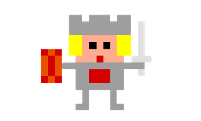
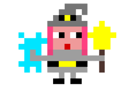

Un joven guerrero de la ciudad de Azeroth, que se ofrece para derrotar a las fuerzas del control. Su manejo de la espada y el escudo es inmejorable, y sus habilidades cuerpo a cuerpo son las mejores de todo Azeroth.

Lessa
La maga más importante de todo Azeroth se enfrentará contra los males del control. Utiliza sus conjuros y hechizos para derrotar a sus enemigos.

Ino
Hijo de la familia de los "Loth", una antigua familia dedicada a la creación de armas para el combate. Este puede manejar tanto armas cuerpo a cuerpo como arcos u otro tipo de armas a distancia.